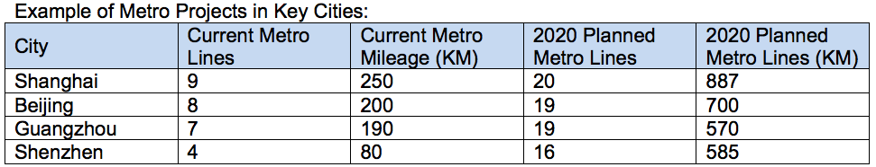
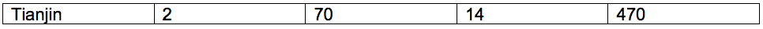

Return to top
During the 11th Five-Year Plan period (2006-2010), China's rail network carried a total of 7.28 billion passengers, and 16.24 billion tons of freight. By the end of 2011, China had a total of 91,000 kilometers of railway, which is utilized to meet freight and passenger demand, ranking second in the world in terms of length. Freight volume reached 3.6 billion tons in 2010, 300 million tons more than in 2009. By the end of 2010, electrified railway mileage reached 42,000 kilometers, becoming the second longest in the world.
China is in the high-speed rail era. Its high-speed rail network reached 8,358 kilometers at the end of 2010 and is expected to exceed 13,000 kilometers by 2012 and 16,000 kilometers by 2015. High-speed railways are incorporated as part of the country's "express railway network," which is expected to reach 45,000 kilometers in length by 2015. The express railway network includes railways of three speeds: arterial rail lines at a speed of 300 km/h, intercity and extension and linking lines at 200-250 km/h, and railways in western China with speeds of 160-200 km/h.
China is now the world's largest market for urban rail transit. By the end of 2010, more than 40 urban rail lines totaling some 1,400 kilometers had been in service in 12 cities on the Chinese mainland, including Beijing, Shanghai, Guangzhou, Shenzhen and Wuhan. To date, 36 cities in China have proposals to construct urban rails, of which 28 cities have won official approval. The 28 cities are planning 87 lines exceeding 2,500 kilometers in total by 2015, with a total investment of RMB 1 trillion.
Return to top
Rail safety
High speed EMU
Communication, signaling and IT systems
Track maintenance for high speed rail
Traction power supply in high speed rail
Passenger station design and construction
Heavy haul transport
Plateau rail
Energy conservation and environmental protection
Urban rail vehicles
Communication and signaling
Power supply and distribution
Electromechanical systems
Safety supporting
IT system
Intelligent AFC
Engineering and construction, Survey and design
Earthquake disaster prevention
Return to top
The investment scale of the new railway line during 12th Five-Year Plan (12th 5YP) period (2011–2015) should reach 30,000 kilometers. By the final phase of the 12th 5YP, the total railway operating mileage is planned to increase from the current 91,000 kilometers to around 120,000 kilometers. 60 percent of lines will be electrified, while 50 percent will be double-track lines. The high speed railway will reach 16,000 kilometers. Railway in the western area could reach 50,000 kilometers. The number of new and renovated railway stations will reach a total of 1,015. At the same time, there will be a large number of advanced technical equipment put into use.
During the 12th 5YP period, the total railway investment is expected to reach RMB 2.8 trillion. Compared with railway new line investment during the 11th 5YP, new line investment during the 12th 5YP period is expected to increase by 87.5 percent, with total investment to increase by 41.4 percent.
It is estimated that by 2020, an additional RMB 2 trillion will be invested, of which approximately RMB 600 billion will be earmarked for development of infrastructure related to passenger-dedicated lines, the coal corridor, western lines, and inter-regional connections. China's total rail network will exceed 120,000 kilometers in length, possibly reaching 150,000 kilometers, and 17,000 kilometers of rail will accommodate double-decker trains. In 2012, total fixed asset investment in railways will reach RMB 500 billion, including RMB 400 billion for construction.
In 2011, NDRC approved 13 metro rail lines, including Hefei, Changchun, Dalian, Wuhan and Shenzhen. 2,500 kilometers will be completed during the 12th 5YP period. By 2015, 35 cities in China will have metro; there will be around 158 metro lines in total; and total mileage of Metro in China will reach to around 4,200 kilometers with a total investment of $178 billion. By 2020, China is expected to have 6,100 kilometers of urban rail lines.


Return to top
China Modern Railways 2012
Approved and hosted by: The Ministry of Railways in China
Show dates: TBD
Show venue: Beijing Exhibition Center
http://www.modernrailways.com.cn/
Metro China
Approved by: Ministry of Commerce, P. R. China
Host: China Communications and Transportation Association (CCTA),
Urban Rail Transit Committee
Show dates: TBD
Show venue: TBD
http://www.metro-china-expo.com/
The U.S. Embassy Commercial Section in Beijing launched an American Rail Working Group (ARWG) in January 2009 to strengthen public-private cooperation in the rail sector. The ARWG features 34 U.S. company members, and benefits from close relationships with the Chinese Ministry of Railway (MOR), U.S. Department of Transportation (DOT), Federal Rail Administration (FRA), U.S. Trade and Development Agency (TDA), U.S. State Department and the U.S. Export-Import Bank. The group meets regularly in Beijing as well as via conference call. New company members are welcome to join. For ARWG membership enquiries, please contact the U.S. Embassy Commercial Section in Beijing by email: aiqun.peng@trade.gov.
Beijing
Contact: Ida Peng
No.55 An Jia Lou Road,
Chaoyang District
Beijing 100600, China
Tel: (86 10) 8531-3947
Fax: (86 10) 8531-3701
Email: aiqun.peng@trade.gov
Shanghai
Contact: Vivien Bao
Shanghai Center, Suite 631
1376 Nanjing West Road,
Shanghai 200040, China
Tel: (86 21) 6279-7630
Fax: (86 21) 6279-7639
Email: vivien.bao@trade.gov